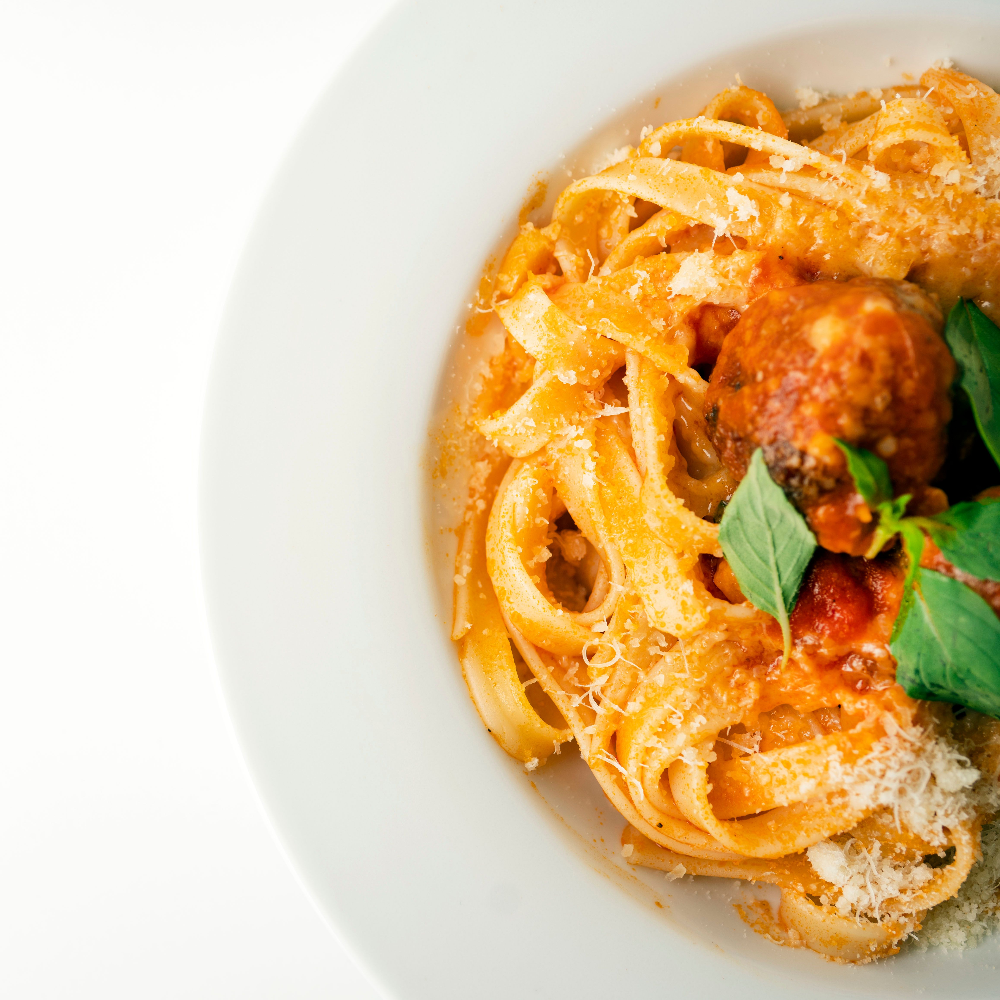

A roasted tomato sauce that pairs well with any pasta. The wine adds a rich depth of flavor to the sauce. Make sure to let the sauce chill overnight for the best flavor. Top with fresh grated Parmesan cheese and basil to enhance the flavor.
1. Heat oven to 375°F.
2. Cut the top off the garlic head to expose the cloves.
3. Place the garlic on a piece of aluminum foil and drizzle with olive oil.
4. Wrap the garlic in the foil and roast for 30-40 minutes until soft and golden.
1. Add the oil into the saucepan and heat to medium. Once the oil has achieved temperature, add the red onion and caramelize.
2. Add the wine and deglaze the pan, scraping all the fond off the bottom of the pan.
3. Add half of the chopped oregano, salt, and pepper. Stir until incorporated.
4. Add the tomatoes and the remaining ingredients, and simmer for 50 minutes on low heat.
5. After 50 minutes, let the sauce cool for 30 minutes.
6. Puree the sauce using an immersion blender.
7. Let the sauce cool completely before storing it in the refrigerator overnight.
8. Reheat the sauce and top on your favorite pasta.